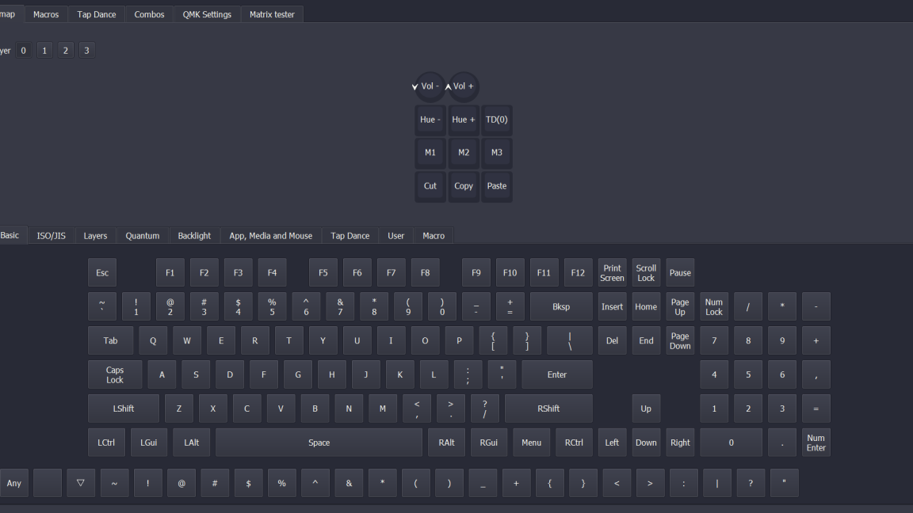
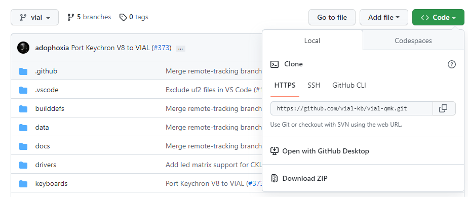

Step 3: QMK and Vial
Installing the tools and flashing the firmware.

Software choices
Vial makes it possible to quickly configure the keys, rotary encoder and LEDs without modifying the code or reflashing the keyboard after every change. You need to install:
QMK is open-source firmware that requires recompiling and flashing to modify the configuration. Vial is an extension of QMK with a graphical interface that stores settings directly on the keyboard.
Putting the code on the macropad
In QMK MSYS, start by running:
qmk setupThen clone the latest version of vial-qmk into a new folder outside the existing QMK folder. GitHub Desktop can be used if you prefer a graphical interface.

In QMK MSYS, create the keyboard with:
cd /c/vial-qmk
qmk new-keyboard- Keyboard Name :
3x3_v2 - Using a Development Board :
y - Development Board :
promicro - Default Layout: none of the above
- MCU :
atmega32u4
Then complete the keyboard files using the code available on GitHub.
In C:\vial-qmk\keyboards\3x3_v2, you need a keyboard.json file and a keymaps folder.
In the keymaps/vial folder, you need the files config.h, keymap.c, rules.mk, and vial.json.
For more information: https://get.vial.today/, https://qmk.fm/. You can also modify the code to add layers and have multiple key configurations on the macropad. In this code, I've only included one layer to save space.
Compiling and flashing
To compile in QMK MSYS:
qmk compile -kb 3x3_v2 -km default
Make 3x3_v2 :vialIf you have problems compiling and just want to test if your macropad works, you will find the already compiled file on GitHub.
In QMK Toolbox, select the compiled file, choose ATmega32U4 and enable Auto-Flash. Quickly press the SMD button next to the Pro Micro twice. If the program indicates that it flashed but doesn't display a lengthy explanation of more than three lines, it hasn't actually flashed. I know it's strange and annoying, but sometimes you have to repeat the process several times until it works. You can now configure the keys in Vial.
← Back to Macropad V2